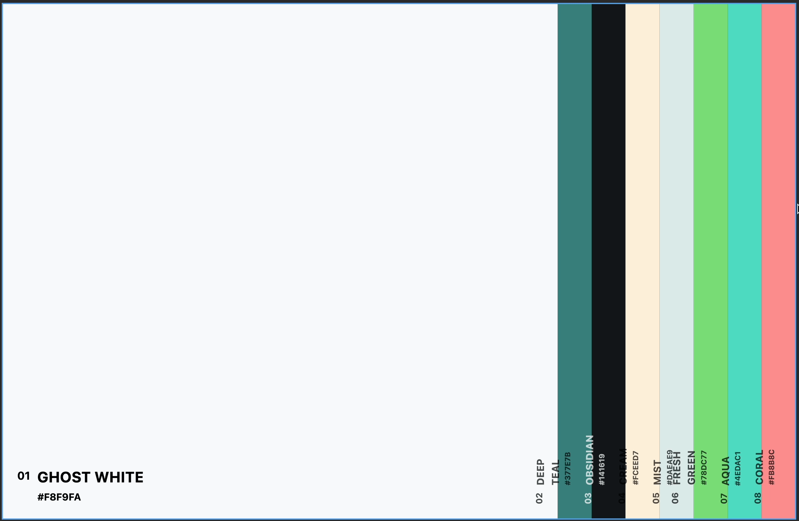
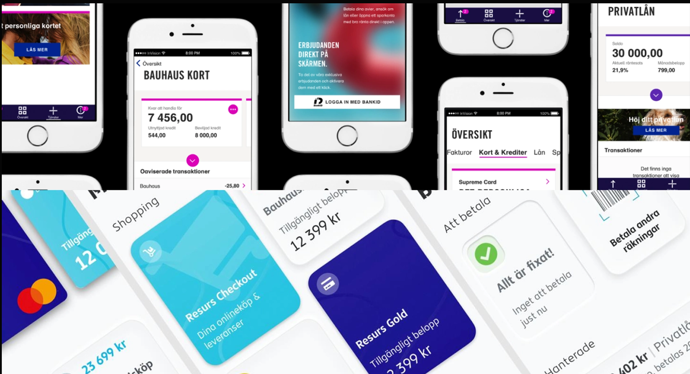
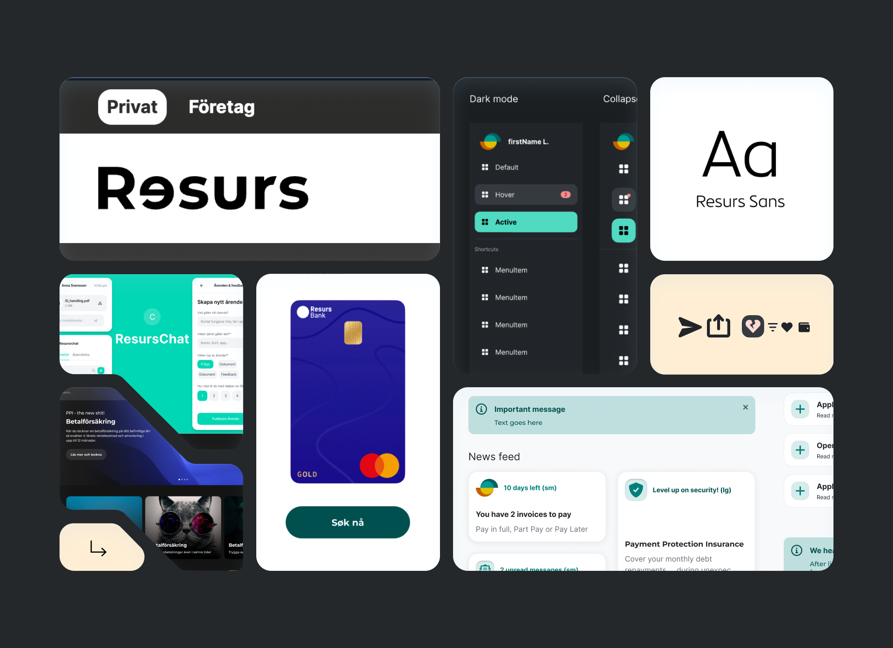
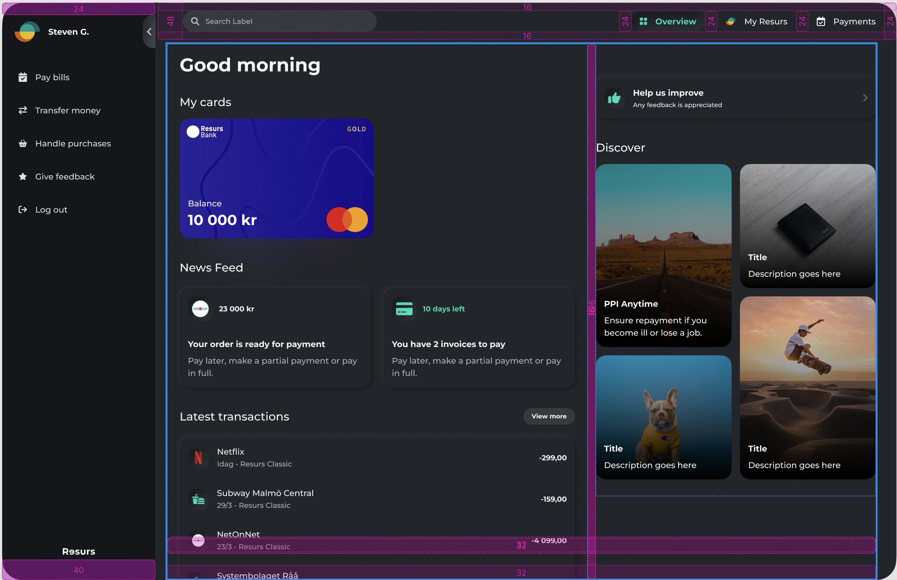
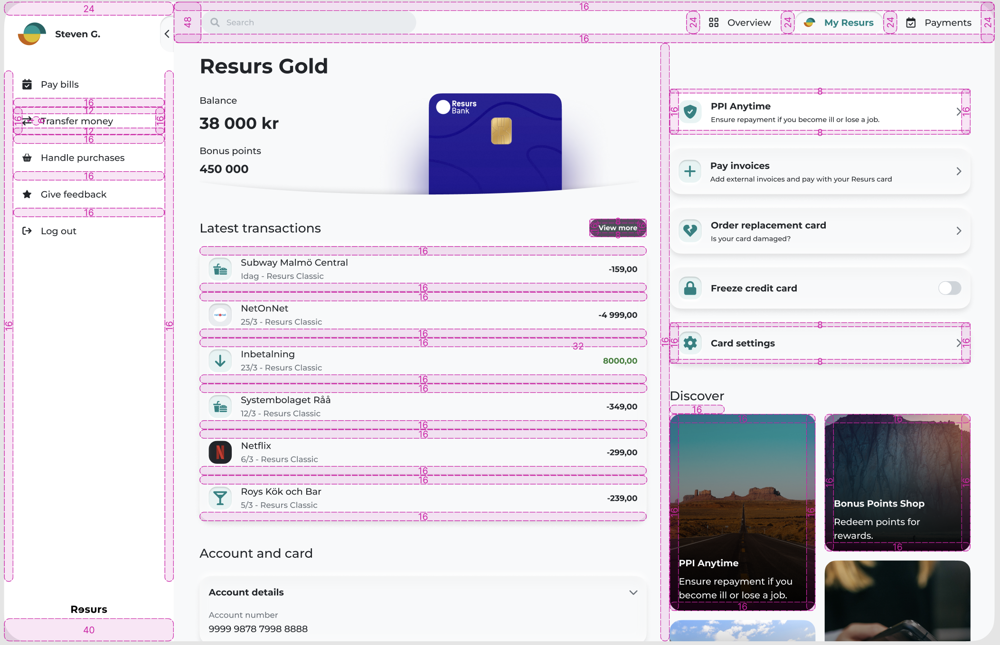
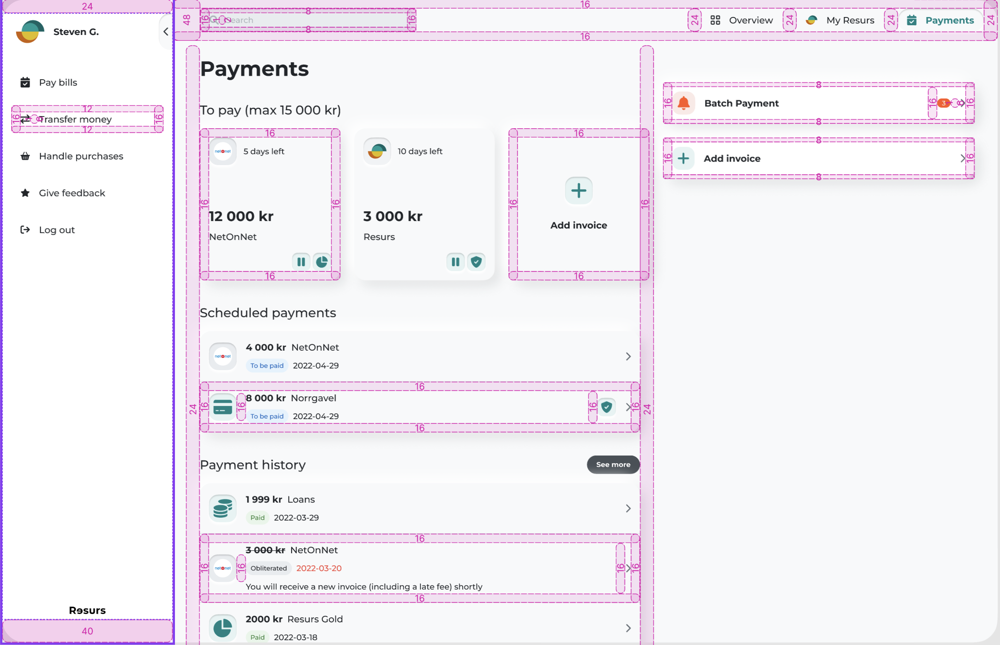
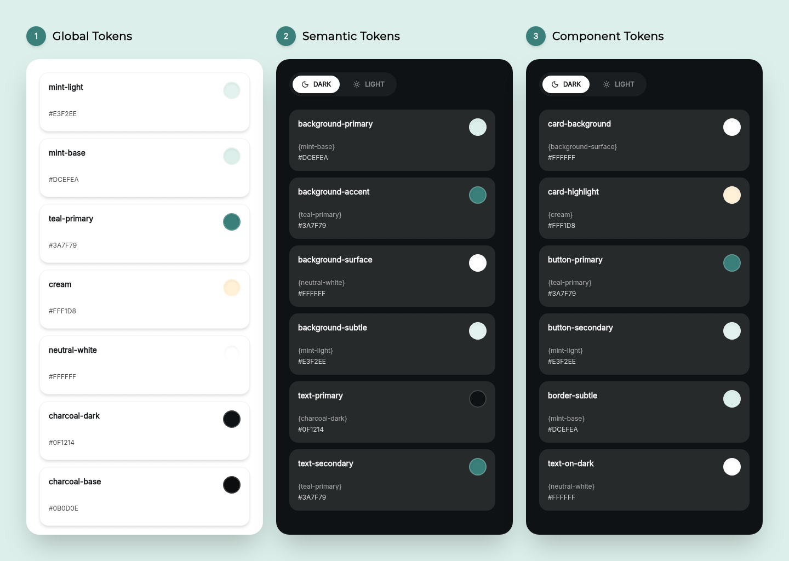
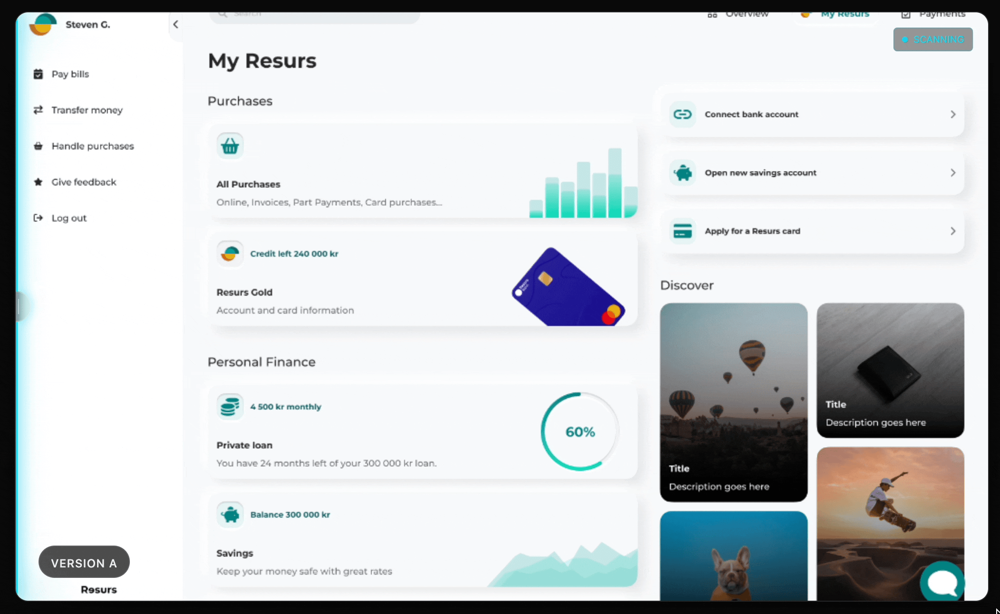
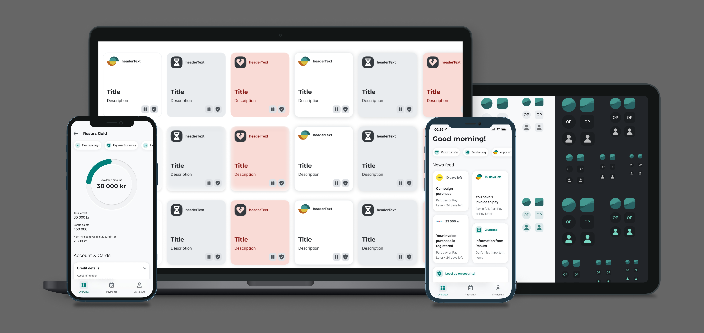

01 / Color
A palette with room to grow.
Colors had been used inconsistently. I streamlined them into a focused palette for light and dark modes, making the interface clearer and easier to maintain.

TRON / design systems
Designing a scalable system to unify UX, speed up delivery, and bring clarity across a growing financial platform.

As a Senior Product Designer, I unified direction across teams, facilitated handoffs between product and engineering, and mentored peers to scale system thinking and speed up delivery.
Teams solved the same UI problems in silos. Without shared documentation or governance, each handoff added friction and scaling product updates became harder.
Repeated UI work caused duplication and delays.
Visual and interaction inconsistencies weakened usability and trust.
A reusable component library was needed to sustain product growth.
I audited the interfaces, defined system-wide design tokens, and built reusable components with documentation in Figma for distributed teams.
Identify fragmented patterns across platforms.
Define visual and functional tokens.
Document flexible components for reuse.
Color, radius, spacing, and tokens gave teams shared rules for making consistent decisions.
Colors had been used inconsistently. I streamlined them into a focused palette for light and dark modes, making the interface clearer and easier to maintain.

For TRON, we defined corner-radius values to make components feel trustworthy and approachable across the product.

Spacing values balance density and clarity across data-heavy screens, keeping important information easy to find.



Tokens made color, spacing, and typography decisions easier to apply consistently as the system scaled.


The system brought product screens and reusable components into a more cohesive experience.
